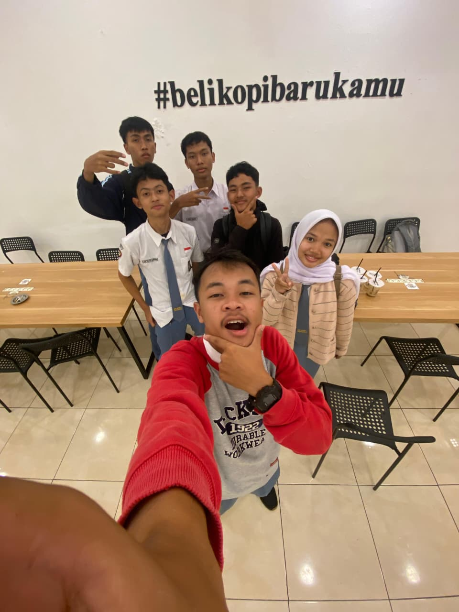
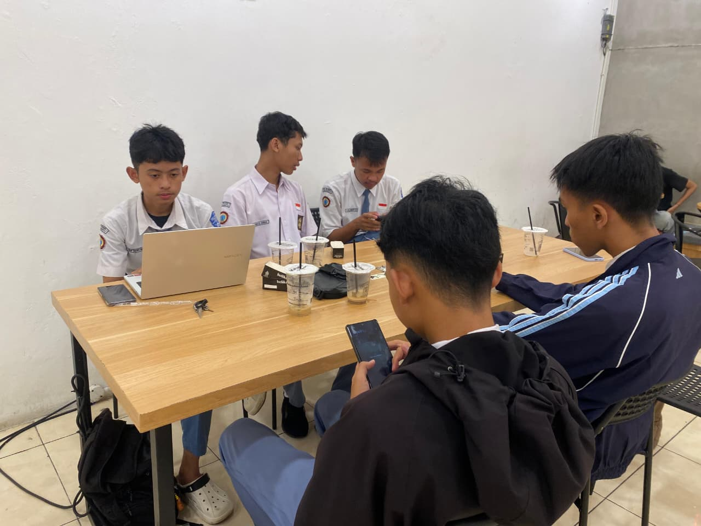
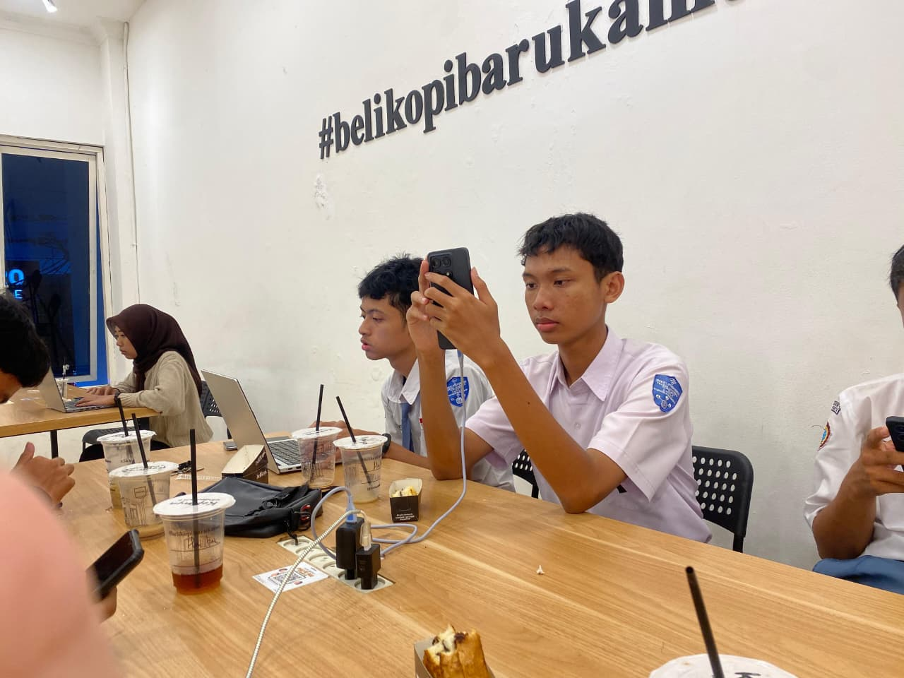

Get the latest updates and deeper coffee experience from Fore Coffee

Tangerang, Banten – 9 September 2025 – Fore, well-known in Indonesia as an F&B company managing a premium-affordable brand, is now expanding its footprint with the...

Jakarta, July 29, 2025 – FORE is showing a strong start in 2025, with a strong Revenue increase of 47% YoY to Rp 662 billion in the first half of the year...

Fore Coffee is proud to introduce a new addition to its kids’ menu lineup: Choco Cookie Shake on 27 June 2025, as part of a special collaboration with Jumbo...